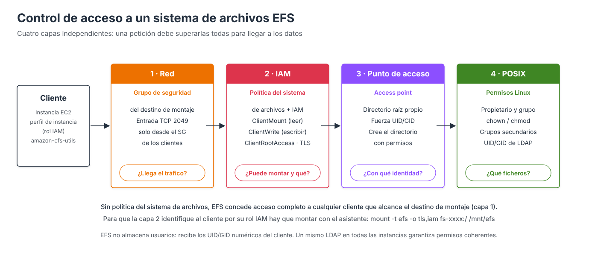

Políticas del sistema de archivos y permisos¶

Vídeo de apoyo
Este apartado se corresponde con el vídeo Políticas de sistemas EFS, que muestra el último paso del asistente de creación.
El acceso a un sistema de archivos EFS se controla en cuatro capas independientes. Es el punto donde suele haber más confusión, porque se mezclan permisos de AWS (quién puede montar el sistema de archivos y cómo) con los permisos tradicionales de Linux (qué puede hacer cada usuario con cada fichero una vez montado).
| Capa | Pregunta que responde | Mecanismo |
|---|---|---|
| 1. Red | ¿Puede el cliente llegar al sistema de archivos? | Grupo de seguridad del destino de montaje (TCP 2049) |
| 2. IAM | ¿Puede montarlo? ¿Puede escribir? ¿Puede actuar como root? ¿Debe usar TLS? | Política del sistema de archivos y políticas de IAM |
| 3. Punto de acceso | ¿Con qué identidad y en qué directorio trabaja la aplicación? | Access points (apartado siguiente) |
| 4. POSIX | ¿Qué ficheros puede leer o modificar cada usuario? | Propietario, grupo, chown, chmod |
La capa de red se estudió en el apartado de arquitectura; este apartado se centra en las capas 2 y 4.
La política del sistema de archivos¶
La política del sistema de archivos (file system policy) es una política de IAM basada en recursos asociada al sistema de archivos, similar a la política de un bucket de S3. Controla quién puede montar y utilizar el sistema de archivos desde AWS, pero no sustituye a los permisos de Linux: una vez montado, la gestión de propietarios, grupos y permisos sigue haciéndose con permisos POSIX, igual que en cualquier sistema de ficheros Linux.
Comportamiento por defecto¶
Sin política, el acceso es completo
Si no se define ninguna política, EFS aplica una política predeterminada que concede acceso completo (incluido root) a cualquier cliente anónimo que pueda conectarse a un destino de montaje. La única protección es entonces el grupo de seguridad. Es cómodo para un laboratorio, pero no es una configuración adecuada para producción.
Acciones de cliente¶
La política trabaja con tres acciones específicas para los clientes NFS:
| Acción | Permite |
|---|---|
elasticfilesystem:ClientMount |
Montar el sistema de archivos con acceso de solo lectura |
elasticfilesystem:ClientWrite |
Escribir en el sistema de archivos |
elasticfilesystem:ClientRootAccess |
Actuar como usuario root (UID 0) sobre el sistema de archivos |
Y con estas claves de condición, las únicas que EFS evalúa para los clientes NFS:
| Clave de condición | Uso |
|---|---|
aws:SecureTransport |
Exigir TLS (cifrado en tránsito) |
elasticfilesystem:AccessedViaMountTarget |
Permitir solo el acceso a través de los destinos de montaje |
elasticfilesystem:AccessPointArn |
Permitir el acceso solo a través de un punto de acceso concreto |
aws:SourceIp |
Restringir por IP de origen (solo rangos públicos) |
Basta con que lo permita una de las dos políticas
Un permiso concedido en la política del sistema de archivos o en la política de IAM de la identidad es suficiente: no es necesario que figure en ambas. Solo un Deny explícito, en cualquiera de ellas, lo anula.
Esto es clave en el Learner Lab: la política de IAM de LabRole concede permisos amplios sobre EFS, incluido ClientRootAccess. Por eso, aunque la política del sistema de archivos no conceda ese permiso, las instancias con LabRole siguen actuando como root. Para impedirlo hay que denegarlo explícitamente (ver más abajo).
Opciones predefinidas de la consola¶
En el paso Política del sistema de archivos del asistente (o en la pestaña del mismo nombre de un sistema existente), la consola ofrece cuatro casillas que generan la política automáticamente. El JSON resultante se muestra en el editor de políticas, donde puede ajustarse a mano.
Impedir el acceso raíz por defecto¶
Elimina ClientRootAccess de las acciones que la política concede. Si el cliente no obtiene ese permiso por ninguna otra vía, cuando opera como root se le trata como un usuario sin privilegios (UID/GID 65534, nobody): es lo que en NFS se conoce como root squashing. Hay que tener en cuenta que, sin política, EFS no aplica root squashing (no_root_squash): el root del cliente es root en el sistema de archivos.
Si el rol concede ClientRootAccess, la casilla no basta
Quitar ClientRootAccess de la política del sistema de archivos no impide el acceso root a una identidad cuya política de IAM ya lo concede, como LabRole en el Learner Lab. En ese caso hay que añadir una sentencia Deny explícita:
{
"Sid": "ForzarRootSquash",
"Effect": "Deny",
"Principal": { "AWS": "*" },
"Action": "elasticfilesystem:ClientRootAccess",
"Resource": "arn:aws:elasticfilesystem:us-east-1:111122223333:file-system/fs-0abc123"
}
Tras añadirla, hay que desmontar y volver a montar: los permisos se evalúan al conectar.
Durante años fue habitual permitir el acceso root en NFS para facilitar la administración, pero hoy la recomendación es la contraria. El motivo es sencillo: si una instancia EC2 resulta comprometida y un atacante obtiene privilegios de root en ella, podría acceder a cualquier fichero del sistema de archivos compartido, sea quien sea su propietario. Impidiendo el acceso root, los privilegios administrativos de una máquina cliente no se trasladan al almacenamiento compartido.
Recomendación: habilitarla en la mayoría de los entornos, en especial con requisitos de seguridad elevados. Solo debería desactivarse con una necesidad operativa justificada.
Preparar la estructura de directorios antes
El directorio raíz de un EFS recién creado pertenece a root:root con permisos 755. Si se impide el acceso root antes de crear los directorios de trabajo y asignar sus propietarios, nadie podrá hacerlo: el root de los clientes ya no es root para EFS. Las alternativas son crear la estructura antes de aplicar el Deny (es lo que se hace en la práctica 3), conceder ClientRootAccess solo a una identidad de administración, o utilizar puntos de acceso, que crean el directorio con el propietario indicado.
Aplicar acceso de solo lectura por defecto¶
Elimina ClientWrite de las acciones permitidas: los clientes solo pueden leer. Igual que con el acceso root, si la política de IAM del rol concede ClientWrite (caso de LabRole), hace falta un Deny explícito de ClientWrite para forzar la solo lectura.
Es útil para repositorios de documentación, contenido estático o datos de referencia que no deban modificarse. En la mayoría de las implementaciones generales las aplicaciones necesitan escribir, por lo que normalmente permanece deshabilitada; lo habitual es conceder la escritura solo a determinadas identidades.
Evitar el acceso anónimo¶
Elimina ClientMount de las acciones concedidas a cualquier cliente: ya no basta con llegar al destino de montaje. Solo pueden montar los clientes que se identifican con IAM (por ejemplo, con el rol del perfil de instancia) y tienen el permiso concedido en su política de IAM o en la política del sistema de archivos.
Es una buena práctica de seguridad y se recomienda mantenerla habilitada para garantizar que todos los accesos están identificados (y quedan registrados en CloudTrail con la identidad del cliente).
Identificarse con IAM al montar
Para que EFS conozca la identidad IAM del cliente, este debe montar con el asistente de montaje y la opción iam (que exige también tls):
Sin la opción iam, el cliente se presenta como anónimo. Si la política no concede nada a los anónimos, el montaje falla con access denied by server.
Aplicar el cifrado en tránsito para todos los clientes¶
Añade una sentencia que deniega cualquier acceso que no utilice TLS (aws:SecureTransport = false). Obliga a que todas las conexiones usen cifrado durante la transmisión, de modo que la información no pueda interceptarse ni inspeccionarse en la red.
Recomendación: habilitarla en cualquier entorno de producción. Los clientes deberán montar con la opción tls.
| Casilla | Efecto en la política | Recomendación |
|---|---|---|
| Impedir el acceso raíz por defecto | Retira ClientRootAccess (con LabRole, añadir además el Deny) |
✅ Habilitar |
| Aplicar acceso de solo lectura por defecto | Retira ClientWrite |
Según el caso (normalmente no) |
| Evitar el acceso anónimo | Retira ClientMount a los clientes no identificados |
✅ Habilitar |
| Aplicar cifrado en tránsito | Deniega el acceso sin TLS | ✅ Habilitar |
Ejemplos de políticas¶
Lectura y escritura para un rol, sin root y con TLS obligatorio¶
La política siguiente concede a las instancias que usan el rol LabRole (el rol del perfil de instancia LabInstanceProfile del Learner Lab) permiso para montar y escribir a través de los destinos de montaje, deniega el acceso root y deniega cualquier conexión sin TLS.
¿Qué ARN se pone en Principal?
Desde la instancia, aws sts get-caller-identity devuelve un ARN temporal de STS (arn:aws:sts::<cuenta>:assumed-role/LabRole/i-...). En la política hay que usar el ARN permanente del rol: arn:aws:iam::<cuenta>:role/LabRole. El motivo se explica en el anexo ARN temporal de STS frente al ARN del rol IAM.
{
"Version": "2012-10-17",
"Statement": [
{
"Sid": "LecturaEscrituraServidoresWeb",
"Effect": "Allow",
"Principal": { "AWS": "arn:aws:iam::111122223333:role/LabRole" },
"Action": [
"elasticfilesystem:ClientMount",
"elasticfilesystem:ClientWrite"
],
"Resource": "arn:aws:elasticfilesystem:us-east-1:111122223333:file-system/fs-0abc123",
"Condition": {
"Bool": { "elasticfilesystem:AccessedViaMountTarget": "true" }
}
},
{
"Sid": "ForzarRootSquash",
"Effect": "Deny",
"Principal": { "AWS": "*" },
"Action": "elasticfilesystem:ClientRootAccess",
"Resource": "arn:aws:elasticfilesystem:us-east-1:111122223333:file-system/fs-0abc123"
},
{
"Sid": "ExigirTLS",
"Effect": "Deny",
"Principal": { "AWS": "*" },
"Action": "*",
"Resource": "arn:aws:elasticfilesystem:us-east-1:111122223333:file-system/fs-0abc123",
"Condition": {
"Bool": { "aws:SecureTransport": "false" }
}
}
]
}
Aplicar la política¶
- EFS → Sistemas de archivos, seleccionar el sistema y abrir la pestaña Política del sistema de archivos.
- Pulsar Editar.
- Marcar las opciones predefinidas deseadas o pegar el JSON en el Editor de políticas. Al editar el JSON a mano, las casillas se desactivan hasta pulsar Borrar.
- Guardar. La política vigente queda visible en la misma pestaña.
Para volver a la política predeterminada (acceso completo anónimo) se elimina la política desde esa pestaña.
EFS, LDAP y permisos de usuario¶
Cuando se trabaja con LDAP, Active Directory, FreeIPA o cualquier otro directorio corporativo, es importante entender que Amazon EFS no almacena usuarios ni grupos. El sistema de archivos solo recibe los identificadores numéricos de usuario y grupo (UID y GID) que envían los clientes Linux en cada operación NFS.
| Usuario | UID | Grupo | GID |
|---|---|---|---|
| juan | 1001 | desarrolladores | 2001 |
Esto tiene una consecuencia práctica: si en una instancia juan tiene UID 1001 y en otra el UID 1001 corresponde a maria, maria verá los ficheros de juan como propios. Si todas las instancias utilizan el mismo LDAP, comparten los mismos UID y GID y los permisos funcionan de forma coherente en cualquier servidor.
La gestión de permisos se realiza exactamente igual que en cualquier sistema Linux:
sudo mkdir /mnt/efs/proyecto
sudo chown juan:desarrolladores /mnt/efs/proyecto
sudo chmod 770 /mnt/efs/proyecto # propietario y grupo: todo; resto: nada
# Directorio de un segundo grupo: setgid para que lo nuevo herede el grupo
sudo mkdir /mnt/efs/informes
sudo chgrp auditores /mnt/efs/informes
sudo chmod 2750 /mnt/efs/informes
ACL
EFS aplica los permisos POSIX clásicos (propietario, grupo y otros, con los bits especiales setuid, setgid y sticky). Las ACL POSIX que se gestionan con setfacl no funcionan sobre montajes NFS v4, por lo que una gestión más granular se resuelve combinando grupos (incluidos los grupos secundarios del directorio corporativo) y puntos de acceso.
Los permisos se administran en el propio sistema de archivos y en el directorio corporativo, no en Amazon EFS: EFS proporciona el almacenamiento compartido; LDAP o Active Directory proporcionan la identidad de los usuarios. Cuando no hay directorio corporativo (por ejemplo, contenedores o funciones Lambda), los puntos de acceso permiten imponer una identidad fija.
Recomendación para un entorno corporativo típico¶
Para un EFS compartido entre varias instancias Linux integradas con LDAP o Active Directory:
- ✅ Impedir el acceso raíz (con un
Denyexplícito deClientRootAccesssi el rol lo concede). - ✅ Evitar el acceso anónimo y montar con
-o tls,iam. - ✅ Exigir cifrado en tránsito.
- ✅ Gestionar usuarios y grupos mediante LDAP o Active Directory.
- ✅ Administrar permisos con propietarios, grupos y permisos POSIX.
- ✅ Utilizar grupos de seguridad e IAM para controlar qué sistemas pueden montar el EFS.
Con esta configuración se obtiene un equilibrio adecuado entre seguridad, administración centralizada de usuarios y protección frente al compromiso de un servidor individual.
Referencias¶
- AWS. Using IAM to control access to file systems — Control de acceso con IAM
- AWS. Creating file system policies — Políticas del sistema de archivos
- AWS. Resource-based policy examples for Amazon EFS — Ejemplos de políticas
- AWS. Enable root squashing using IAM authorization for NFS clients — Root squashing
- AWS. Network File System (NFS) level users, groups, and permissions — Permisos NFS
- AWS. Blocking public access to EFS file systems — Bloqueo del acceso público
- Classmethod. ¿Se bloquea el acceso anónimo con una política que solo permite autenticación IAM? — Prueba práctica